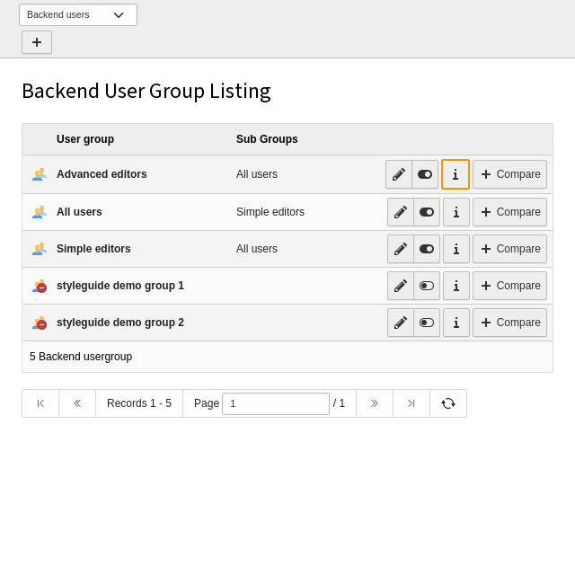
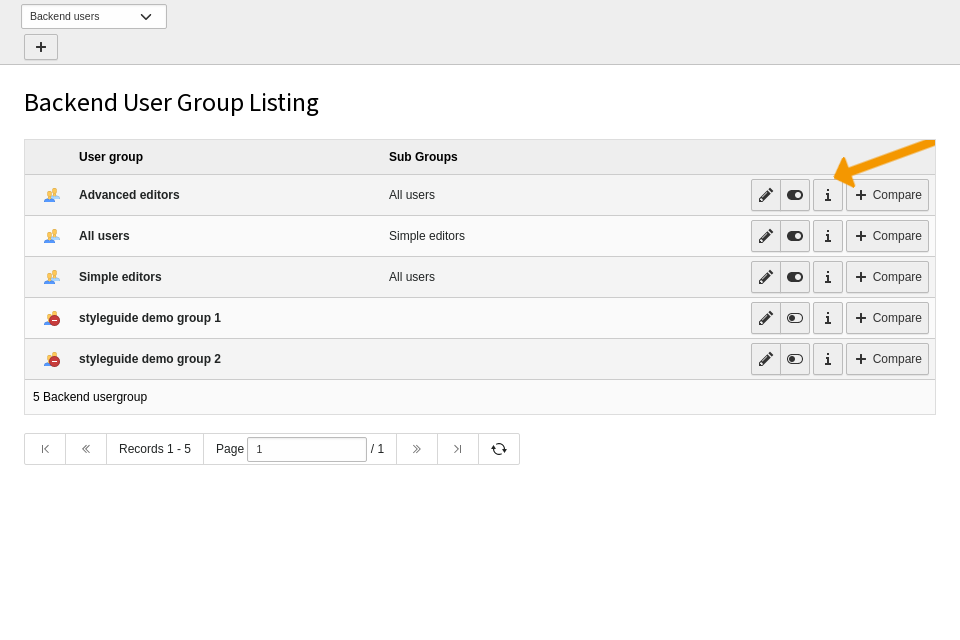

Action configuration¶
The action configuration is an object with the following parameters:
-
action¶ Required: true Type: string One of the following:
- click
- Click something
- change
- Change the value of a selector.
- open
- Open something, used with accordion.
- wait
- Wait for something. Either used with a
selectorto wait for or atimeoutin ms. - hide
- Hide a css selector
- draw
- Draw a visual guide
Action click¶
This action clicks something. Is has the following properties:
Required: false Type: string Contains the text on the button to be clicked.
Change the record type, wait for the expected modal dialog, then click OK:
"actions": [ { "action": "change", "select": "record_type", "value": "0" }, { "action": "wait", "selector": ".modal-dialog", "options": { "visible": true } }, { "action": "click", "button": "OK" }, ]
-
select¶ Required: false Type: string Click a select field to reveal its content without changing it. Contains the name of the field.
Open the select box of the Ctype field:
"actions": [ { "action": "click", "select": "CType" } ]
-
tab¶ Required: false Type: string Click a tab in a record to take a screen of another tab. Contains the name of the field
Switch to the tab Access by clicking it:
"actions": [ { "action": "click", "tab": "Access" } ]
Action change¶
This action changes something. Is has the following properties:
-
select¶ Required: false Type: string Change a select box by selecting a different value. Contains the name of the field.
Open the select box of the Ctype field:
{ "action": "change", "select": "record_type", "value": "0" }
Action draw¶
Draws a visual guide element in TYPO3 orange.
-
item¶ Required: false Type: string What item should be drawn.
- box
- An orange box around the selector
-
item:box¶ Required: false Type: string Draw an orange box around the selector. Often has to be combined with a wait so everything is drawn before taking the screenshot
"actions": [ { "action": "draw", "item": "box", "selector": "tbody .btn-default:first" }, { "action": "wait", "timeout": 100 } ]Class: with-shadow An orange box around the selector
-
item:arrow¶ Required: false Type: string Draw an orange arrow around the selector. Often has to be combined with a wait so everything is drawn before taking the screenshot
"actions": [ { "action": "draw", "item": "arrow", "selector": "tbody .btn-default:first" } ]Class: with-shadow An orange box around the selector
Action hide¶
Hides a certain element by executing javascript on the page whose screenshot should be taken.
-
select¶ Required: false Type: string Hide the element by a jquery selctor:
- {
- “action”: “hide”, “selector”: “.module-docheader”
}
Action open¶
This action opens something. Is has the following properties:
-
accordion¶ Required: false Type: string Opens an accordion. In opposite to action
clickit only opens the accordion if it is closed and doesn’t click it when its already opened. This prevents togglinghContains a special value starting with
@or a selector.Special values:
@first- open the first accordion you can find if it is closed.
Example
Open the first accordion you can find. Then recursively open an accordion that is inside the first accordion:
"actions": [ { "action": "open", "accordion": "@first" }, { "action": "open", "accordion": ".form-irre-object .panel-collapse .form-irre-header-button" } ]
Action wait¶
-
timeout¶ Required: false Type: integer Wait for a timeout. Time in milli seconds. 1000 would be one second.
-
selector¶ Required: false Type: string Wait for a selector.
optionsspecify exactly what to wait for. Contains the selector
-
options¶ Required: false Type: object Wait for the modal dialog to be visible:
{ "action": "wait", "selector": ".modal-dialog", "options": { "visible": true } },